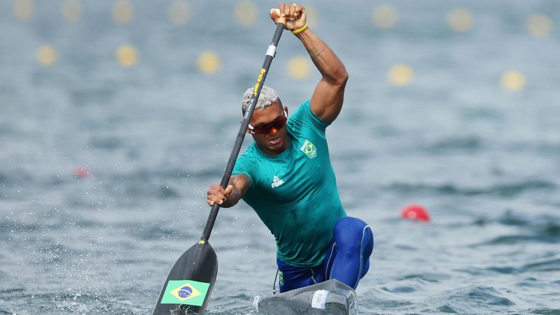

Isaquias Queiroz dos Santos (Ubaitaba, 3 de janeiro de 1994) é um canoísta brasileiro, campeão olímpico nos Jogos Olímpicos de Verão de 2020, na Canoa Individual C1 1.000m, chegando aos 4:04:408 minutos. Em Nos Jogos Olímpicos de Verão de 2016, Isaquias se tornou o primeiro atleta brasileiro a conquistar três medalhas em uma única edição dos Jogos Olímpicos. Nesta oportunidade, conquistou prata na Canoa Individual (C1) 1.000m, bronze na Canoa Individual (C1) 200m e prata na Canoa de Dupla (C2) 1.000m, com Erlon de Sousa Silva.
Isaquias cresceu em Ubaitaba, cidade de 20 mil habitantes localizada numa região que no passado era habitada por índios tupiniquins.
Isaquias é casado desde 2017 com Laina Guimarães, com quem tem dois filhos, Sebastian (n. 2018, batizado em homenagem ao rival Brendel), e Luigi (n. 2023).
O pai de Isaquias morreu quando ele tinha apenas dois anos, e a mãe, Dilma, cuidava dele e de outros nove irmãos e irmãs (cinco biológicos e quatro adotados). Ao trabalhar, ela às vezes deixava as crianças trancadas em casa.